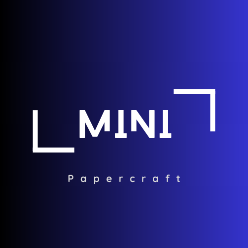
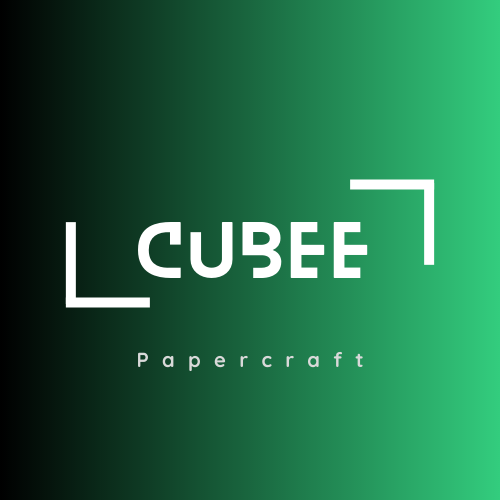

La mayoría de nosotros en algún momento de nuestra juventud nos hemos divertido haciendo aviones de papel. Algunas personas, sin embargo, han llevado esa fascinación por el papel a un nuevo nivel, aquí te muestro las diversas ténicas.

Si prefieres diseños pequeños como los mini Funko Pop, entonces los mini papercraft son perfectos para ti.

Si prefieres diseños estilo cubo de tus personaje favoritos esta técnica es perfecta para ti.
Te gustaría hacer diversas figuras solo doblando y cortando de una manera super secilla, pues el Kirigami es la técnica perfecta para ti.